ひとりごとのかたち / 積層体について
2023.01 / Media Art
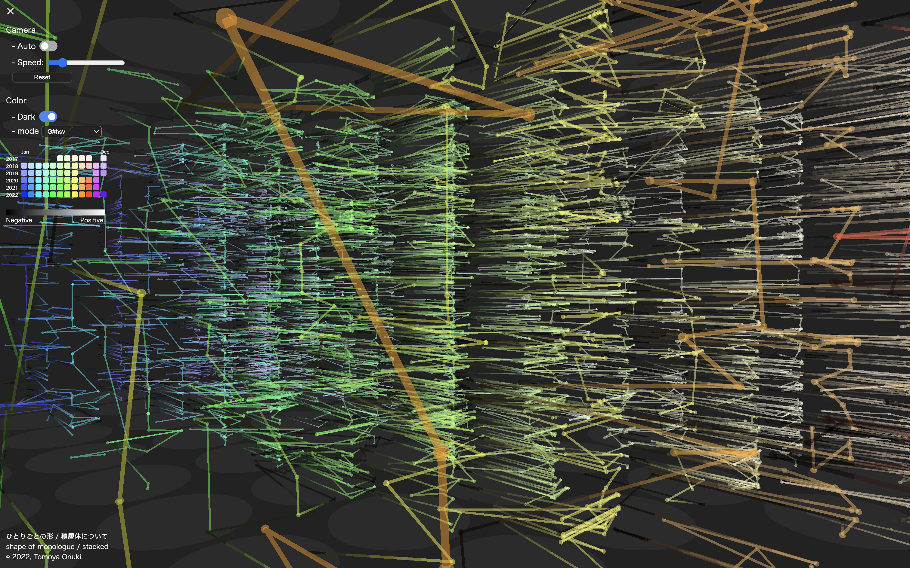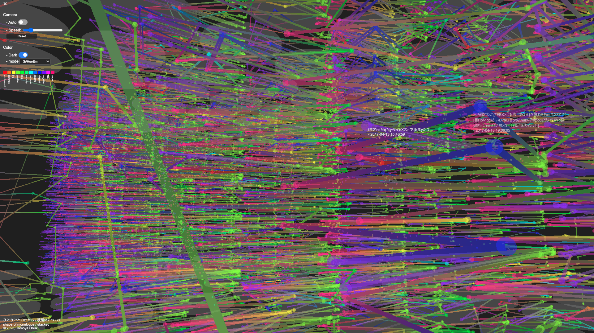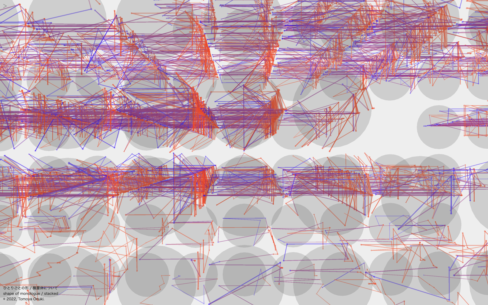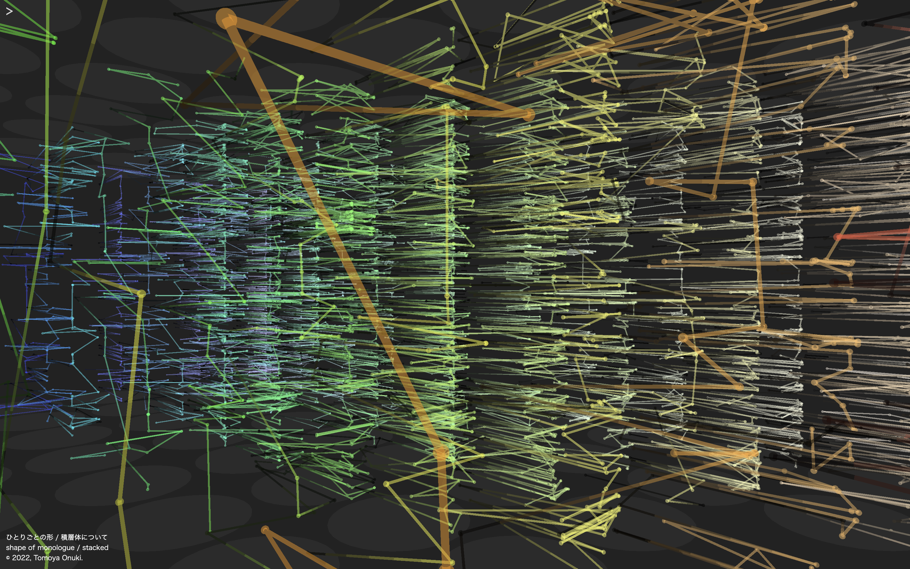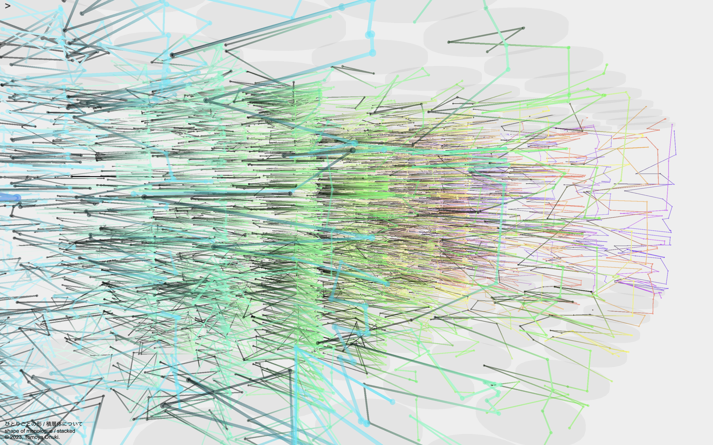 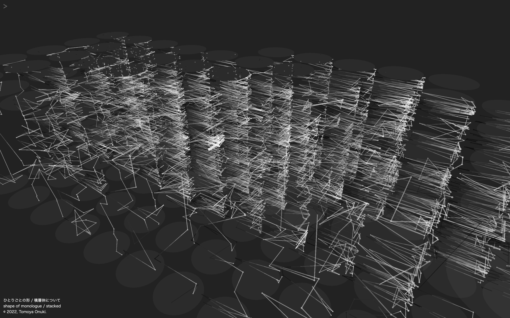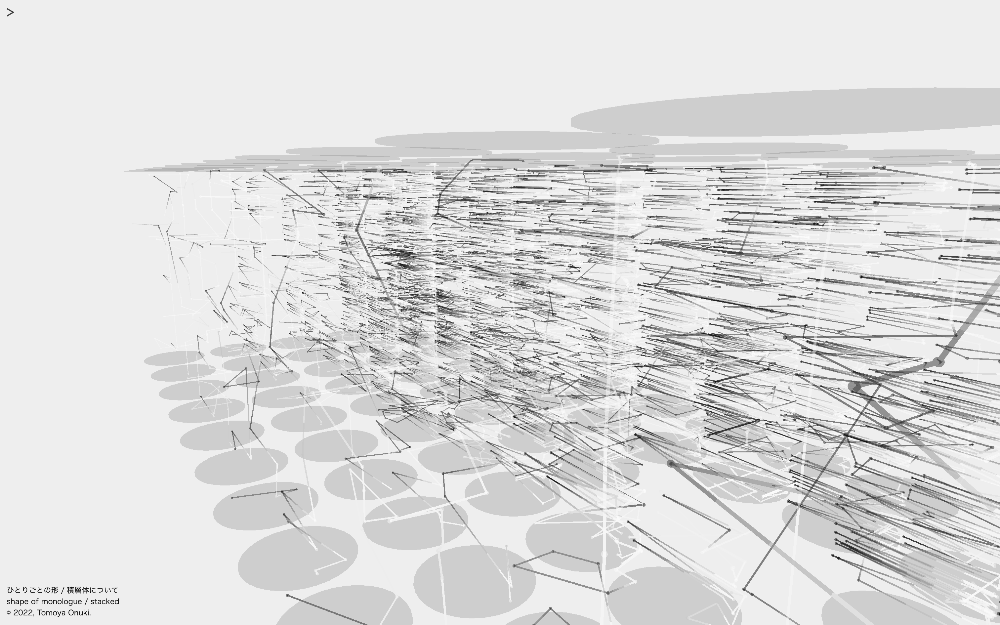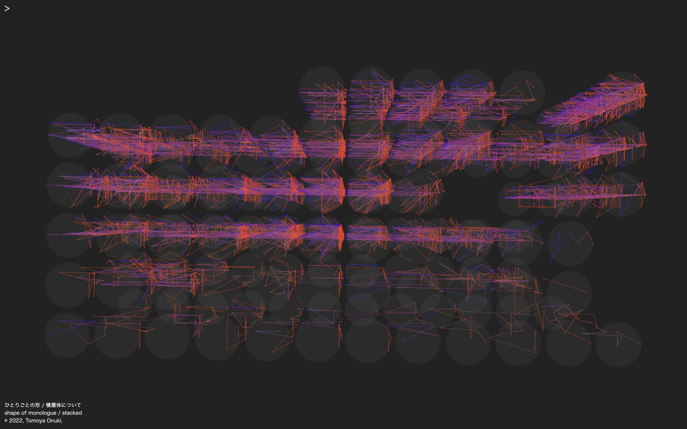
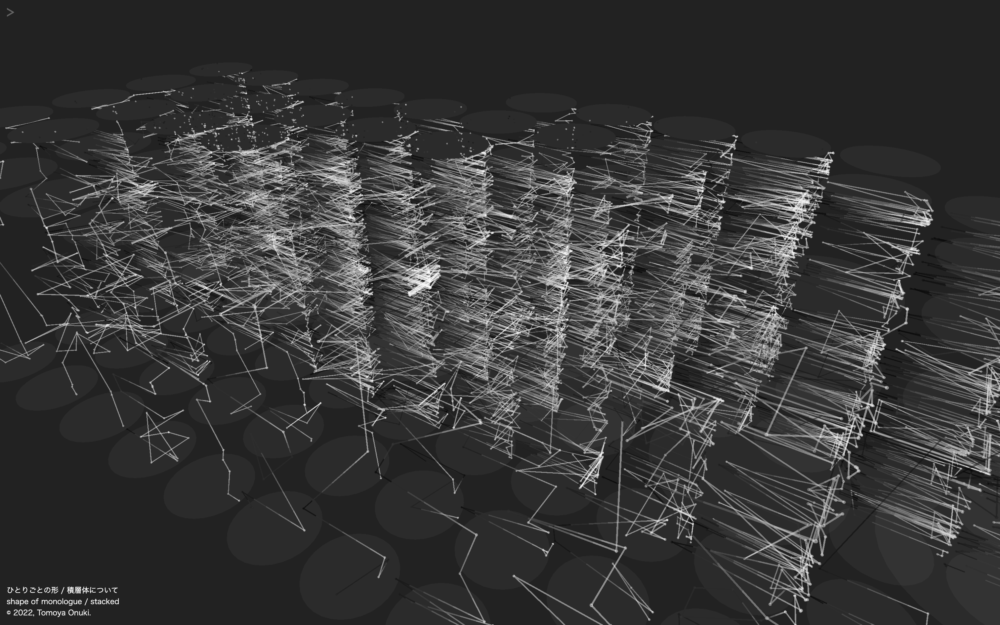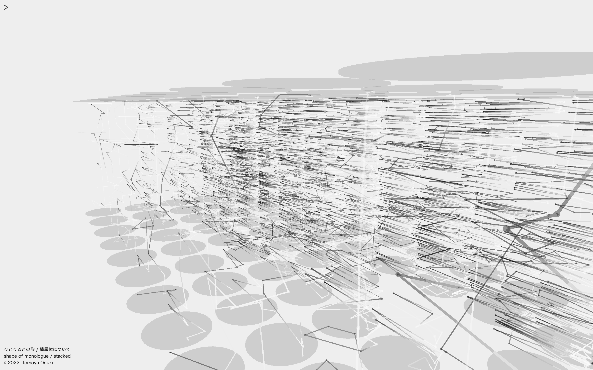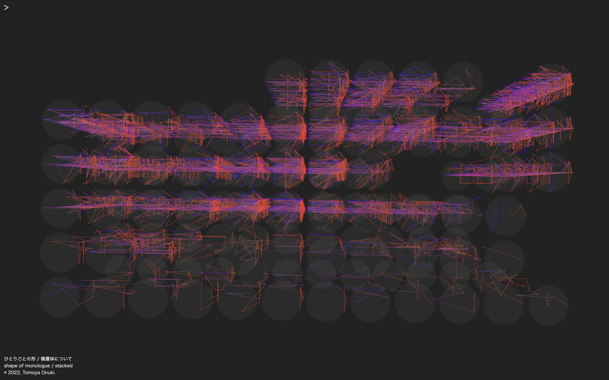
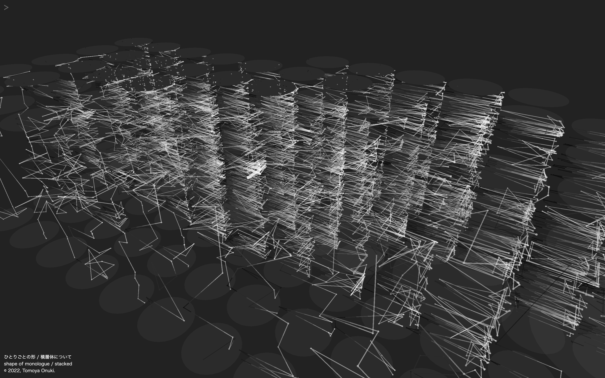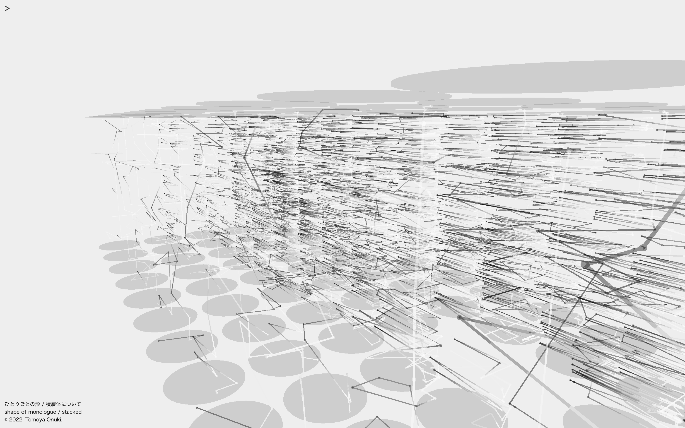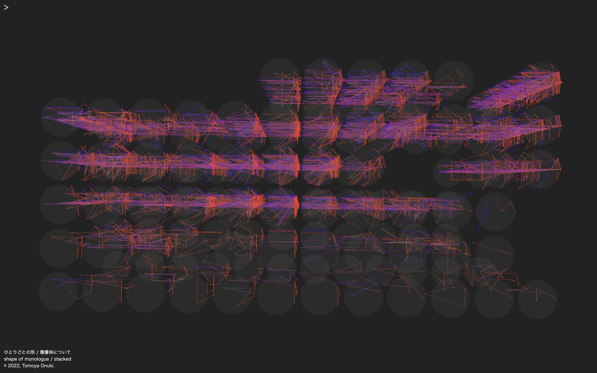作者の学生時代に呟いた約8年分のTweetを感情分析した結果に基づき構成した作品。
1つのTweetから抽出した感情を円周上の点で表現し、これらを結んだ線分の形状がTweetを表現する。これを各月ごとに連結し重ねたオブジェクトを整列させた。インタラクションによりデザインを変更したり、作品内を探索することができる。各点をクリックするとTweetを閲覧することができるが、過去に遡れば遡るほど文章が崩れている。
この作品は2022年12月で止まっており、作品が古くなればなるほどTweetは原形を失う。しかし感情によって構成されるオブジェクト群はその形を残し続ける。